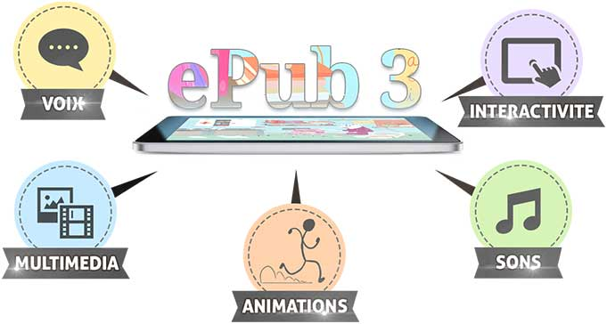

Par Tess Kermarrec, étudiante en master Publication Numérique (2018-2019) à l'ENSSIB.
On ne peut pas décemment créer un livre enrichi sans parler un peu plus de ce que c’est, si ? L'édition à l'ère numérique est un monde qui va très vite, il est alors essentiel de faire le point sur ce qui existe à ce jour, sur ses potentialités en terme d’innovation.
Beaucoup disent qu’un livre c’est tout d’abord un objet physique fait de papier, d’une reliure et d’une couverture. Cependant, comme le film est devenu un art à part de la photographie, l'augmenté est un autre art et déploie d’autres potentiels de créativité.
Beaucoup de lecteurs préfèrent le papier pour la lecture personnelle. C’est une bonne façon de poser (pauser ?) son écran puisqu'un livre est un objet plus facilement malléable, nous avons moins peur de l'abîmer, de l’écorcher, de le faire tomber, de le déchirer. On peut écrire dessus, gribouiller, souligner, c'est un objet qui peut avoir une valeur personnelle très forte, c'est un objet avec une identité "à soi", un objet qui porte physiquement la marque d'une lecture. C’est sentimental mais aussi pratique. Mais au-delà de cela, on peut tout de même aisément reconnaître que le livre enrichi est un format idéal pour une création multimédia et, en 2019, les éditeurs et les équipes techniques, graphiques peuvent vraiment des choses extraordinairement créatives ET pertinentes.
Une courte introduction avant de rentrer dans les détails : qu'est-ce qu'un livre enrichi exactement ?
Il faut penser hyperliens, penser sons, animations, penser musique, penser 'tap', penser informatif, et surtout penser au-delà. Une oeuvre enrichie va au-delà du texte, au-delà mais aussi plus en détails. En fait, lire une oeuvre enrichie est une expérience quelque peu ubiquitaire. Le but étant de traverser le temps et l’espace, d’aller vers un univers multiple, multimédia et multimodal.
Sous la forme d’un ePub, d’une application ou d’une page web (voire de plusieurs de ces formats combinés), le livre enrichi sort de la textualité pure d’un texte. Évidemment, cela pose des problèmes. Des problèmes de format, de dispositifs. Mais aussi des débats sur l’expérience même de lecture. La gamification de la lecture est une problématique abordée par la plupart des éditeurs qui se sont risqués à faire de l’enrichi. Ne serait-ce pas que de briser la suspension d’incrédulité tant cherchée par les auteurs au fil des siècles, et surtout, depuis l’apparition du roman ? Ces questions seront plus amplement développées au cours de cet article.
Premièrement, il est essentiel de souligner l'existence d'une forme parfois oubliée de l’enrichi qui pourtant est primordiale dans la question du numérique et du développement de l’enfant. En effet, l’enrichi n’est pas seulement numérique. Il peut aussi se construire sur une complémentarité entre le papier et le numérique.
Un exemple : la collection “Histoires Animées” de la maison d’édition Albin Michel en jeunesse. Pour cette collection, les éditeurs ont choisi d’associer monde physique du papier et monde dématérialisé de la tablette. Ici, la réalité dite 'augmentée' est mise au service de la lecture d’une histoire, d’un objet physique : l’album papier. La tablette est utile à la narration : lorsqu’on met le livre en contact avec la tablette, un autre niveau de lecture apparaît. Les illustrations prennent vie sous nos yeux. Le logiciel reconnaît la page et affiche l’animation à l’écran : il ne suffit à l’enfant que d’effleurer l’écran pour animer l’image, faire bouger les personnages et les décors. Il y a cependant plusieurs contraintes techniques à la création d’un tel format hybride : par exemple, le papier de la page doit être très épais et mat afin d’éviter que la lumière se reflète sur la page, sinon le logiciel ne pourra pas la reconnaître.
Le challenge du numérique est d’ordre créatif, c’est une opportunité de créer. En effet,
la littérature numérique comme un nouveau champ artistique, une nouvelle ouverture sur l’imaginaire.1
L’enjeu est de créer, d’imaginer, de trouver des enrichissements qui puissent éveiller l’intérêt du lecteur sans prendre le pas sur l’objet purement textuel : l’histoire.
Pour aller plus loin : cliquez ici !
Tout d’abord, petit rappel technique : à ce jour, le livre numérique interactif utilise le format ePub 3. Voici un petit rappel des possibilités offertes par l’ePub avant de continuer à lire :
Cliquez ici pour en savoir plus et checker la source !
Quand on pense livre numérique, on pense surtout liseuse, texte numérisé. L’interactif pousse le numérique à évoluer. Le livre enrichi est disponible via une application sur tablette ou sur smartphone, et/ou un site Web. Une nouvelle littérature apparaît donc avec le numérique et d’autant plus avec le numérique enrichi et devient un
lieu de rencontres et d’explorations2.
Cette nouvelle littérature est plus que jamais liée à son dispositif de lecture. L’oeuvre numérique est créée dans et pensée pour un dispositif : le numérique est à la fois
médium (moyen de communication), support, contrainte, instrument et condition de l’oeuvre3.
L’apparition de ce nouveau format crée de nouvelles fonctions éditoriales basées sur l’expérience sensorielle et sur l’attention du lecteur puisque
la lecture interactive possède fondamentalement une dimension performative interprétable4.
Avec l’apparition de la tablette tactile, les potentialités du livre numérique explose. Le tactile est utilisé par les éditeurs comme un moyen de créer des contenus au-delà du texte. Une question demeure pour les éditeurs, certains sont très réticents à l’idée de produire des livres numériques interactifs. L’interaction supplante-t-elle le texte dans l’univers mental du lecteur ? Ne serait-ce pas que d’oublier le texte que d’en faire presque un jeu ?
Ce qui peut être dit avec certitude, c’est que la tablette change notre façon de lire. Elle n’est plus linéaire mais galaxique, fragmentaire. Elle fait donc émerger de nouvelles formes éditoriales. En terme de production, le livre est donc chamboulé dans sa forme et dans sa conception.
Pour vous donner une idée un peu plus précise de ce fait, concentrons nous un instant sur la remédiatisation de Candide, Voltaire, par la Bibliothèque Nationale de France (BnF). La BnF choisit de remettre ce conte philosophique au goût du jour avec une optique bien précise : non pas immerger le lecteur dans le texte, mais dans l’univers du texte. La BnF propose sur la tablette trois modes d’entrée dans le livre :
Cette remédiatisation6 du conte utilise alors bien des codes de l’écran ET de l’écrit. Texte et interactif sont donc intrinsèquement liés. Le tactile permet une interaction physique avec le monde du texte, il transforme l’expérience du lecteur en ce qu’elle devient plus sensible : par une « gestuelle inédite » et par « le choix d’activer les liens et les fonctionnalités de l’interface »7.
Le rôle de l’éditeur est donc bel et bien multiplié par le numérique, de nouvelles questions apparaissent : comment encadrer la lecture ? Doit-on imposer les animations ou les rendre optionnelles ? Où et quand rajouter du contenu à l’écran ? Quelles animations innovantes est-il possible de proposer au lecteur ? Cela va-t-il véritablement lui servir ou lui entacher la lecture ? Les dimensions sont multipliées également :
dimensions narrative, documentaire, ludique, sociale, esthétique ou polysensorielle8.
Une autre forme de livre enrichi, moins scolaire et orienté jeunesse, a aussi été pensée. La start-up Studio Troll a conçu un conte enrichi pour enfants sur application pour iPad, Une Nuit d’hiver9, sortie en 2012. En voici une démonstration vidéo pour vous donner une idée plus précise des possibilités du numérique enrichi (cliquez ici pour la visionner). Ce format renvoie à la page classique papier, la start-up a donc utilisé ce qu’on appelle communément des 'pages-écran' afin de rappeler un format qui est plus familier à l’enfant. En effet, le Web étant un flow, le système de pagination vient donc forcément d’une stratégie éditoriale particulière. Afin de rappeler à l’enfant (et aux adultes) la familiarité du papier, la start-up a ajouté le bruit des pages qui se tournent lorsqu’on tape sur la flèche page suivante. Cependant, les pages ne sont pas numérotées et ne sont pas précédées d’un sommaire. Le texte est blanc sur un fond sombre.
L’originalité de cet ouvrage réside cependant autre part : la start-up a choisi d’utiliser un système d’hyperliens, le plus souvent optionnels, ie on peut choisir de taper sur le mot souligné (indiquant donc la présence d’une animation, la start-up anticipe le fait que les enfants savent reconnaître et manipuler un lien10) ou non. Ces hyperliens peuvent être une animation visuelle, un effet sonore, un ajout textuel.
Pour conclure, il est très important de signaler que le numérique est un monde constamment en mouvement qui provoque constamment des débats auprès des lecteurs oui, mais aussi auprès des éditeurs. En effet, une enquête menée auprès des éditeurs 'pure-players' entre 2012-2014 a démontré qu’ils étaient mitigés sur la question de l’interactivité11. L’enrichi, selon eux, reste associé au jeu et au gadget technologique : plus précisément, il reste cette peur de déconcentrer le lecteur, de lui faire perdre le fil de la lecture, etc12. C’est une question à prendre en compte surtout quand la littérature numérique suscite autant de réticences encore aujourd’hui : parce qu’on oublie souvent que la machine n’est rien sans usager, et que sans auteur la machine ne peut pas écrire :
la machine ne dépossède pas l’humain de sa créativité et de sa poésie, tout au contraire, elle est habitée par l’humain à travers ce qui le forge vraiment au niveau culturel, à savoir sa poésie, sa musique, tout ce qui exprime sa créativité.13
Outre les questions des limites psychocognitives, la création de livres numériques enrichis engage de fortes contraintes techniques liées à l’intéropérabilité14 et aux formats, à la maintenance et à l’actualisation des mises à jour des systèmes d’exploitation de la tablette (comme iOS de la tablette d’Apple)15, qui restent toujours des affaires à suivre pour les éditeurs afin de procurer au lecteur l’expérience la plus pertinente et accessible.
Benhamou, Françoise, et Olivia Guillon. « Modèles économiques d'un marché naissant : le livre numérique », Culture prospective, vol. 2, no. 2, 2010, pp. 1-16.
Bootz, Philippe. Chapitre VI. « La littérature numérique en quelques repères » In : Lire dans un monde numérique [en ligne]. BÉLISLE, Claire (dir.). Villeurbanne : Presses de l’enssib, 2011 (généré le 15 décembre 2018). Disponible sur Internet :
http://books.openedition.org/pressesenssib/1095.
ISBN : 9782375460481.
DOI : 10.4000/books.pressesenssib.1095.
Laborderie, A., Jeantet, C. & Hellégouarc’h, P. (2018). « Remédiatiser le patrimoine littéraire à travers le livre enrichi : quelles expériences de lecture ? ». Revue de recherches en littératie médiatique multimodale, no.8
Saemmer, Alexandra et Tréhondart, Nolwenn. « Les figures du livre numérique « augmenté » au prisme d’une rhétorique de la réception », Études de communication [En ligne], 43 | 2014, mis en ligne le 01 décembre 2014, consulté le 15 décembre 2018.
URL : http://journals.openedition.org/edc/6036 ;
DOI : 10.4000/edc.6036
Tréhondart, Nolwenn. « Le livre numérique « augmenté » au regard du livre imprimé : positions d’acteurs et modélisations de pratiques », Les Enjeux de l'information et de la communication, vol. 15/2, no. 2, 2014, pp. 23-37.
1. BOOTZ, Philippe. Chapitre VI. « La littérature numérique en quelques repères » In : Lire dans un monde numérique [en ligne]. Villeurbanne : Presses de l’enssib, 2011 (généré le 15 décembre 2018), p.6. Retour au texte
2. BOOTZ, op.cit., p.2. Retour au texte
3. Ibid., p.5. Retour au texte
4. Ibid., p.23. Retour au texte
5. Laborderie, A., Jeantet, C. & Hellégouarc’h, P. (2018). « Remédiatiser le patrimoine littéraire à travers le livre enrichi : quelles expériences de lecture ? ». Revue de recherches en littératie médiatique multimodale, no.8, p.4. Retour au texte
6. La remédiatisation est « la représentation, l’appropriation et la transformation d’un média dans un autre, caractéristique déterminante des nouveaux médias numériques. » Laborderie, A., Jeantet, C. & Hellégouarc’h, P. (2018). op.cit., p.4. Retour au texte
7. Ibid., p.5. Retour au texte
8. Ibid., p.8. Retour au texte
9. Alexandra Saemmer et Nolwenn Tréhondart, « Les figures du livre numérique « augmenté » au prisme d’une rhétorique de la réception », Études de communication [En ligne], 43 | 2014. Retour au texte
10. Alexandra Saemmer et Nolwenn Tréhondart, op.cit., p.118. Retour au texte
11. Tréhondart, Nolwenn. « Le livre numérique « augmenté » au regard du livre imprimé : positions d’acteurs et modélisations de pratiques », Les Enjeux de l'information et de la communication, vol. 15/2, no. 2, 2014, p.28. Retour au texte
12. Tréhondart, Nolwenn, op.cit., p.28. Retour au texte
13. BOOTZ, Philippe, op.cit., p.2. Retour au texte
14. « L’interopérabilité consiste en l’adoption de normes techniques communes (en particulier, format des fichiers) en amont et en aval de la filière, de façon à ce que les différentes initiatives éditoriales et industrielles soient compatibles entre elles et que l’usager puisse lire un même livre indifféremment sur plusieurs matériels de lecture sans coût de transfert. » Benhamou, Françoise, et Olivia Guillon. « Modèles économiques d'un marché naissant : le livre numérique », Culture prospective, vol. 2, no. 2, 2010, p.6 . Retour au texte
15. Laborderie, A., Jeantet, C. & Hellégouarc’h, P. (2018), op.cit., p.5. Retour au texte